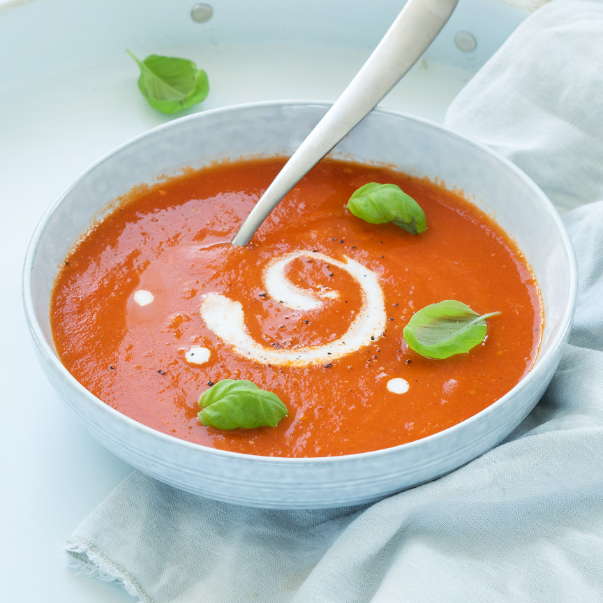

Zet een soeppan op het vuur en fruit de ui en knoflook ongeveer 3 min in de olijfolie. Voeg de tomaten parten toe en bak deze 5 min mee. Voeg het water en de bouillontabletten toe en roer de tomatenpuree er door, laat nog een paar minuten koken. Pureer nu alles met een staafmixer en laat de tomatensoep een paar minuutjes doorkoken. Serveer de tomatensoep in 4 borden of kommen. Schenk in elk bord of kom een klein scheutje kookroom. Garneer de soep eventueel met verse basilicum.
